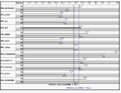
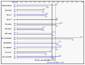

Last updated: $Date: 2008-05-13 09:00:38 -0500 (Tue, 13 May 2008) $ by $Author: john $
(To check for possible updates to this document, please see http://www.spec.org/cpu2006/Docs/ )
SPEC CPU2006 V1.1 is an incremental update to SPEC CPU2006 V1.0. Results generated with V1.1 are comparable to results from V1.0 and vice versa. V1.1 is intended to improve compatibility, stability, documentation and ease of use. Changes are intended to be useful to several kinds of users:
For users of new platforms:
For anyone who reads (or produces) a result:
For researchers and developers:
For testers of large systems:
For new users of the suite:
For those who test many platforms:
If you have already used SPEC CPU2006 V1.0 and already have configuration files, it is recommended that you read through this document, so as to avoid surprises during use of V1.1 Among the changes that you are likely to be affected by are the change to build directory locations, the reporting of parallel flags, the automatic setting of test date, and the addition of debug logs. If you still have USER numbers, it's time to stop now.
Contents
(This table of contents proceeds in rough order of time for a user of the suite: you acquire a platform, ensure that you are familiar with the rules, build the benchmarks, run them, generate reports, and occasionally use utilities and other features.)
1.6 estimates
2.1.1 identifiers
3.1.2 system state
3.2.5 parallel setup
4.2.3 automatic parallelization
4.2.6 user-built systems
4.3.2 speed conversion
4.6 required disclosures
1. Build directories separated
2. Bundle up binaries and config file
3. Parallel builds on Windows too
4. Unexpected rebuilds reduced
1. Parallel setup
2. Per-benchmark basepeak and copies - behavior change
3. Per-benchmark bind
4. PreENV allows setting of environment variables
5. Runtime monitoring
6. $SPECUSERNUM no longer recognized
1. Auto Parallel - changes to handle common cases
2. CSV updated
3. Flag reporting - multiple files supported, flag order preserved, report readability
4. Graphs cleaned up
5. Links and attachments
6. Report names have changed
7. Seconds are reported with more digits
8. Submission check automatically included with rawformat
9. Test date automatically set
1. Convert to Development
2. Dump alternative source
3. Index
4. Make alternative source
5. ogo top takes you to $GO
6. port_progress
7. specrxp
8. Speed metric from rate run
Other New and Changed Tools Features
1. Benchmark lists and sets can be referenced
2. Debug logs
3. Keeping temporaries
4. Submit lines continued
5. Submit notes
6. Trailing spaces in config files
Note: links to SPEC CPU2006 documents on this web page assume that you are reading the page from a directory that also contains the other SPEC CPU2006 documents. If by some chance you are reading this web page from a location where the links do not work, try accessing the referenced documents at one of the following locations:
With this release of SPEC CPU2006, new support is added for:
With this release of SPEC CPU2006, support is removed for:
The following benchmark changes were made in V1.1:
400.perlbench
perlio.c:2872: error: 'FILE' has no member named '_file'because of a change in the Solaris FILE structure. This problem has been fixed by removing the outdated code.
Under V1.0 of SPEC CPU2006, if you compiled 400.perlbench with gcc on ia64/Linux, the benchmark would sometimes abort abnormally with an unaligned access error, due to a jmpbuf on some Linux systems whose alignment violated the ABI. You can now optionally set SPEC_CPU_IA64_GCC_ALIGNMENT to force jmpenv (in scope.h) to be better aligned.
403.gcc
435.gromacs
445.gobmk
447.dealII
450.soplex
453.povray
462.libquantum
464.h264ref
Some compilers object to having TRUE and FALSE used in this enum in parsetcommon.h:
typedef enum {
FALSE,
TRUE
} Boolean;
which implicitly redefines FALSE to 0 and TRUE to 1. Although these are the same values they already had, some compilers object to the redefinition. A simple solution is to undefine these just before the enum, which can be done by setting the new flag -DSPEC_CPU_REDEF_TRUE_FALSE.
471.omnetpp
481.wrf
Fixed a Fortran 90 standards violation where two associated dummy arguments were defined during the execution of a subprogram. Note that this update used the same fix as WRF version 2.2. (481.wrf is based on WRF version 2.1).
In a bit more detail: There is a subroutine in module_bl_ysu.F90 that is called in violation of the Fortran standard about variable overlapping. The routine tridin has three variables (cu,r1,r2) that are passed in the same parameters as (au,a1,a2) in both calls. The new code has fixed this problem by making copies of the read-only versions of the duplicated parameters before the call.
483.xalancbmk
Build directories separated: Benchmarks are now built in directories named benchspec/CPU2006/nnn.benchmark/build/build... (or, on Windows, benchspec\CPU2006\nnn.benchmark\build\build...), rather than under the benchmark's run subdirectory. The change is intended to make it easier to copy, backup, or delete build and run directories separately from each other. (It may also make problem diagnosis easier in some situations, since your habit of removing all the run directories will no longer destroy essential evidence 10 minutes before the compiler developer says "Wait - what exactly happened at build time?").
If you prefer the V1.0 behavior, you can revert to it by setting build_in_build_dir to 0.
You can now bundle up a set of binaries and their associated config file, for easy transportation and use on other systems.
WARNING: Although the features to create and use bundles are intended to make it easier to run SPEC CPU2006, the tester remains responsible for compliance with the run rules. And, of course, both the creators and the users of bundles are responsible for compliance with any applicable software licenses.
Parallel builds on Windows too: Users of Microsoft Windows systems can now use multiple processors to do parallel builds, by setting makeflags, for example:
makeflags = -j N
This feature has worked with SPEC CPU testing on Unix for many years; what's new in CPU2006 V1.1 is the ability to use it on Windows. Note that requesting a parallel build with makeflags = -j N causes multiple processors to be used at build time. It has no effect on whether multiple processors are used at run time, and so does not affect how you report on parallelism.
Parallel Setup: For reportable runs, substantial time may be required during the setup phase, as the tools write run directories for every copy, and validate that benchmark binaries get the correct answers for the (non-timed) test/train workloads. SPEC CPU2006 V1.1 provides several new features to allow these operations to complete more quickly by optionally doing more operations in parallel: parallel_setup, parallel_test, parallel_setup_type, parallel_setup_prefork, bench_post_setup, and post_setup.
During testing of V1.1, a very large server (with over 600 hw_threads) was observed to complete the binary validation phase about 8x faster using parallel_test, and the ref directory setup phase more than 2x faster with parallel_setup. The net time saved on this very large server was more than 10 hours.
Your mileage may vary:
When considering your disk layout options, bear in mind that the run rules require use of a single file system.
Note that these setup features (parallel_setup, parallel_test, parallel_setup_type, and parallel_setup_prefork) control parallelism during the preparation phase for running the benchmarks, not the actual runs. Therefore, they have no effect on the setting of the report field
Auto Parallel: Yes/No
... discussed below
Per-benchmark basepeak and copies - behavior change: If you select basepeak=1 for an individual benchmark, the number of copies in peak will be forced to be the same as in base. Note that in SPEC CPU2006 V1.0, you could set basepeak for a benchmark, and still change the number of copies in peak; this was deemed to be an error. If you want to run the same tuning in both base and peak, while changing the number of copies, you will need to build two binaries with the same compiler switches.
Per-benchmark bind: The bind list can now differ on a per-benchmark basis in peak. Allowing this difference was viewed as a convenience, since the run rules already allow the submit command to differ on a per-benchmark basis in peak.
The PreENV config file option allows setting of environment variables prior to the exectuion of runspec.
Run-time monitoring: The monitor hooks have been a little-known feature of the SPEC CPU toolset for many years. They were first described in the ACM SIGARCH article SPEC CPU2006 Benchmark Tools and are now further described in monitors.html. The monitor hooks allow advanced users to instrument the suite in a variety of ways. SPEC can provide only limited support for their use; if your monitors break files or processes that the suite expects to find, you should be prepared to do significant diagnostic work on your own.
$SPECUSERNUM no longer recognized: The field $SPECUSERNUM was deprecated in V1.0 of SPEC CPU2006, in favor of $SPECOPYNUM. $SPECUSERNUM is no longer recognized in V1.1. No error message is printed. If you still have user numbers lurking in your config file, make them into copy numbers, please.
Auto Parallel - changes to handle common cases: If benchmarks are automatically optimized to use multiple threads, cores, and/or chips at run time, the tester needs to indicate this in the report as
Auto Parallel: Yes
For V1.0, it was sometimes difficult to ensure that reports were accurate, in part because there can be multiple sources of run-time parallelism (as described in the run rules).
With SPEC CPU2006 V1.1, the V1.0 method of filling out the above field, sw_auto_parallel, has been retired, and three new features have been introduced to better reflect these sources of parallelism.
The intent is that the most common case will be handled automatically:
Overall, the setting of the Auto Parallel field in reports can be thought of as if it were derived from this logic:
(i | ii) & (¬ iii)
... or for the benefit of those readers who think in FORTRAN, it is as if the derivation were:
( I .OR. II ) .AND. ( .NOT. III)
CSV format updated - If you populate spreadsheets from your runs, you probably shouldn't be doing cut/paste of text files; you'll get more accurate data by using --output_format csv. The V1.1 CSV output now has a format that includes much more of the information in the other reports. All runs times are now included, and the selected run times are listed separately. The flags used are also included. Although details of the new features are not shown in the documentation, you should explore them, by taking the new CSV out for a test drive. It is hoped that you will find the V1.1 format more complete and more useful.
Flag reporting - multiple files supported, flag order preserved, report readability There are several changes to reporting on compiler flags:
You can now format a single result using multiple flags files. This feature is intended to make it easier for multiple results to share what should be shared, while separating what should be separated. Common elements (such as a certain version of a compiler) can be placed into one flags file, while the elements that differ from one system to another (such as platform notes) can be maintained separately. Suggestions on use of this feature can be found in flag-description.html.
The flag reporter now does a better job of reporting flags in the same order in which they appeared on the command line.
Flag reporting has been re-organized in an attempt to improve readability:
Base Compiler Invocation
Base Portability Flags
Base Optimization
Peak Compiler Invocation
Peak Portability Flags
Peak Optimization
Graphs cleaned up:
|
V1.0 format:  |
V1.1 format:  |
Graphs have been changed to reduce the amount of shading, and to reduce painting of other pixels that were not essential to the data being presented (with a tip of the hat to Professor Tufte's notion of reducing "chartjunk", or apologies, depending on the reader's opinion of the change). |
Links and attachments can now be added to reports.
Report names have changed:
In CPU2006 V1.0, final reports had names of the form
<suite>.<nnn>.<type>
for example, CINT2006.003.ps, CINT2006.003.txt, CFP2006.022.pdf, and so forth. The form of the file names has changed to now be
<suite>.<nnn>.<workload>.<type>
for example, CINT2006.003.ref.ps, CINT2006.003.ref.txt, CFP2006.022.ref.pdf.
There are two reasons for this change:
Note: For V1.0, a reportable run would generate three .rsf files: CPU2006.nnn.test.rsf, CPU2006.nnn.train.rsf, and CPU2006.nnn.rsf. For V1.1, for a reportable run, you will see only CPU2006.nnn.ref.rsf. You won't see CPU2006.nnn.test.rsf or CPU2006.nnn.train.rsf unless you say --size test or --size train in your runspec command.
Seconds are reported with more digits:
Background: For certain values, the SPEC tools print 3 significant digits. This is intentional. For example, if one system has a SPECint_rate2006 performance of 1234.456 and another has a SPECint_rate2006 performance of 1229.987, it is arguable that the performance of these systems is not materially different. Given the reality of run-to-run variation (which is, sometimes, on the order of 1%), it makes sense to report both systems' SPECint_rate2006 as 1230.
Although there is agreement that it is acceptable to round SPEC's computed metrics to 3 significant digits, it has been noted that the argument is weaker for rounding of original observations. In particular, if we wish to acknowledge the reality of run to run variation, then it seems reasonable to report a time of 1234.456 seconds using an integral number of seconds (1234), rather than rounding to the three significant digits, which in this case would be rounding to the nearest 10 seconds (1230).
Change made: Ever since the release of V1.0 of SPEC CPU2006, results posted on SPEC's web site (such as the HTML, PDF, and text formats) have used 3 significant digits for computed metrics, and seconds larger than 1000 have been reported as an integral number of seconds. As of V1.1, reports produced on your own test systems now behave the same way.
The Submission Check report is now automatically included in the output_format list when using rawformat. This change was made because the typical use of rawformat is to create final (submission quality) reports. Even if you don't plan to submit your result to SPEC, the checks that are done by Submission Check can help you to create reports that are more complete and more readable.
The test_date is now automatically set from the system clock, and you should not set it yourself.
Convert to Development: In order to assist with compliance with the run rules (so that results are meaningful and comparable), the SPEC CPU tools perform various checks to ensure that benchmark code, workloads, and tools match the original distribution. Sometimes, though, researchers or developers may want to work in an environment without these checks, for example, when modifying code to add performance instrumentation.
Prior to V1.1, doing so typically required that you abandon the tools. With V1.1, you now have another choice: you can continue using the SPEC supplied toolset in a development sandbox, via the convert_to_development utility.
Keeping temporaries: If you are having trouble debugging your test setup (for example, if your new submit command or parallel_test option is failing), you may want to try the new keeptmp feature. When this option is set, the above-mentioned debug log is kept, along with the various temporary files that it mentions.
If you leave keeptmp at its default setting, temporary files will be automatically deleted after a successful run. If you are managing disk space on a tight budget, and keeping temporaries, you'll almost certainly need to adjust your cleaning methods.
submit lines continued: It is now possible to append a numeral to submit lines, to continue your submit commands over several lines. This feature is intended to improve the readability of your config file when using the submit feature.
Submit notes: The tools will now automatically insert a section with notes on your submit command for runs that use submit. You can customize the section.
Trailing spaces are now stripped in config files, unless preceded by a backslash, as described in the section on whitespace.
Documentation has been added for the new features mentioned in this document. Most of the changes are linked from the descriptions above. A few items might not be immediately obvious from the above links, and are called out here:
| config.html |
|
|---|---|
| flag-description.html |
|
| runspec.html |
|
These user-visible features are new, updated, or newly documented for SPEC CPU2006 V1.1:
Copyright 2008-2011 Standard Performance Evaluation Corporation
All Rights Reserved